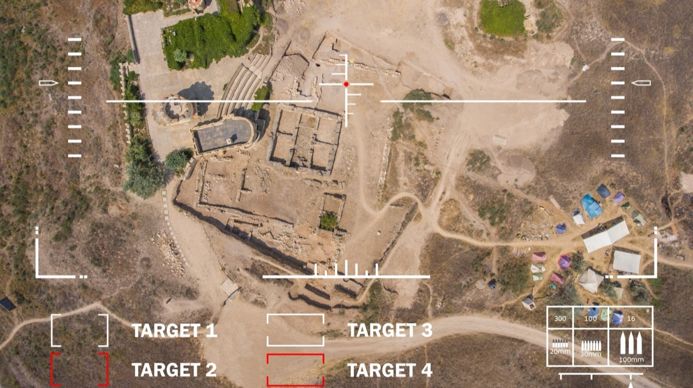
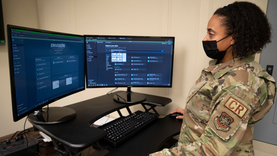

Palantir 服务于美国空军与太空军
通过软件加速决策优势

解锁洞察 → 加速决策
Palantir 平台专注于将海量、孤立的数据源与决策的各个要素整合到统一的环境和通用作战图景中。
→ DETECT
通过聚合、关联、融合和利用来自所有领域和来源的数据，Palantir 平台驱动一个作战神经系统，以保持领域感知并增强指挥与控制。
→ DETER
以近乎实时的洞察保持信息优势——这些洞察从以往分散且复杂的数据中提取，从传感器直达最终用户，并以统一视图呈现。
→ DEFEAT
Palantir 平台驱动软件优势，实现数据驱动、主动、果断的决策。

播放视频
差异化的软件是取得卓越成果的手段，它往往是成功与失败的分水岭。
内容
Maven Smart System  立即阅读
立即阅读Maven Smart System 是 Palantir 面向联合全域指挥与控制（CJADC2）的 AI 赋能平台，使美军能够跨所有军种和作战司令部利用联合资源。
Palantir Artificial Intelligence Platform (AIP)  了解更多
了解更多AIP for Defense 在您的网络中交付先进的 LLM 和 AI 能力，覆盖从涉密系统到战术边缘，并通过强大的安全与治理控制确保合法合规使用。
本体论软件开发工具包（OSDK）  了解更多
了解更多Defense OSDK 让您直接在开发环境中充分释放本体论的强大能力。与 Defense 本体论集成，并提供易于使用的 API，兼容各类 Defense 项目和 Palantir 应用。
Mission Manager  了解更多
了解更多Mission Manager 为政府机构和主承包商提供一个生态系统平台，使其能够在安全的 IL5 或 IL6 环境中以可扩展的方式部署、管理和监控第三方供应商应用。
新闻动态
AI 能否帮助目标定位人员减少平民伤亡？ 
立即阅读Palantir 在华盛顿特区的 AI 博览会上展示了这一概念，演示了能够分析多源数据的软件，以更好地识别拟打击目标建筑内部或附近是否有平民。
SSC 软件在阿富汗空运行动中发挥关键作用 立即阅读由 Palantir 驱动的 Warp Core 帮助为国防决策者提供了阿富汗局势的权威图景。
美国空军借助新工具简化战备跟踪 
立即阅读空军第 621 应急响应联队正在借助其新的战备工具——由 Palantir 驱动的 Envision 平台——改变其运作方式。
追求信息优势 立即阅读Palantir 帮助 NORAD 和 USNORTHCOM 威慑、探测并击败针对美国的威胁。
联系我们
请参阅我们的 隐私政策 以了解我们将如何处理此信息。